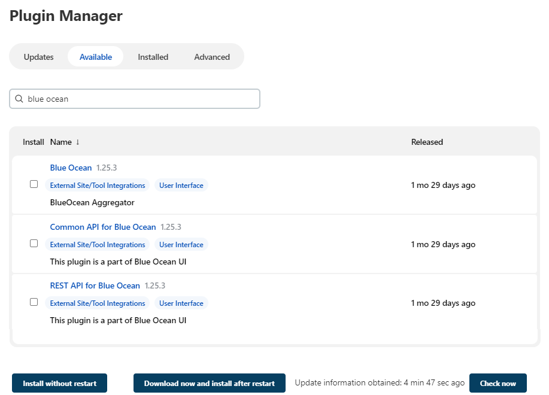
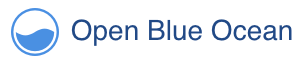
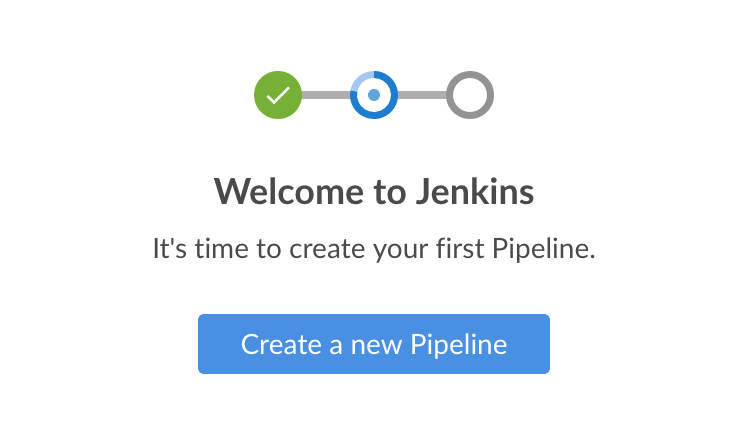

Getting started with Blue Ocean
This section describes how to get started with Blue Ocean in Jenkins. It includes instructions for setting up Blue Ocean on your Jenkins instance, how to access the Blue Ocean UI, and returning to the Jenkins classic UI.
|
Blue Ocean status
Blue Ocean will not receive further functionality updates. Blue Ocean will continue to provide easy-to-use Pipeline visualization, but it will not be enhanced further. It will only receive selective updates for significant security issues or functional defects. |
Installing Blue Ocean
You can install Blue Ocean using the following methods:
-
As a suite of plugins on an existing Jenkins instance.
-
As a part of Jenkins in Docker.
On an existing Jenkins instance
When Jenkins is installed on most platforms, the Blue Ocean plugin and all necessary dependent plugins, which compile the Blue Ocean suite of plugins, are not installed by default.
Plugins can be installed on a Jenkins instance by any Jenkins user who has the Administer permission. This is set through Matrix-based security. Jenkins users with this permission can also configure the permissions of other users on their system. Refer to the Authorization section of Managing Security for more information.
To install the Blue Ocean suite of plugins to your Jenkins instance:
-
Ensure you are logged in to Jenkins as a user with the Administer permission.
-
From the Jenkins home page, select Manage Jenkins on the left and then Manage Plugins.
-
Select the Available tab and enter
blue oceanin the Filter text box. This filters the list of plugins based on the name and description.
-
Select the box to the left of Blue Ocean, and then select either the Download now and install after restart option (recommended) or the Install without restart option at the bottom of the page.
-
It is not necessary to select other plugins in this list. The main Blue Ocean plugin automatically selects and installs all dependent plugins, composing the Blue Ocean suite of plugins.
-
If you select the Install without restart option, you must restart Jenkins to gain full Blue Ocean functionality.
-
Refer to the the Managing Plugins page for more information. Blue Ocean does not require additional configuration after installation. Existing Pipelines and projects will continue to work as usual.
The first time you create a Pipeline in Blue Ocean for a specific Git server, Blue Ocean prompts you for your Git credentials to allow you to create Pipelines in the repositories.
This is required since Blue Ocean can add a Jenkinsfile to your repositories.
|
As part of Jenkins in Docker
The Blue Ocean suite of plugins is not bundled with the official Jenkins Docker image, jenkins/jenkins, which is available from the Docker Hub repository.
Read more about running Jenkins and Blue Ocean inside Docker in the Docker section of the installing Jenkins page.
Accessing Blue Ocean
Once a Jenkins environment has Blue Ocean installed and you log in to the Jenkins classic UI, you can access the Blue Ocean UI by selecting Open Blue Ocean on the left side of the screen.

Alternatively, you can access Blue Ocean directly by appending /blue to the end of your Jenkins server’s URL.
For example https://jenkins-server-url/blue.
If your Jenkins instance:
-
Already has existing Pipeline projects or other items present, the Blue Ocean Dashboard displays.
-
Is new or does not have projects or other items configured, Blue Ocean displays a Welcome to Jenkins pane with a Create a new Pipeline button. You can select this to begin creating a new Pipeline project. For more information, refer to the Creating a Pipeline page for more information on creating a Pipeline project in Blue Ocean.

Navigation bar
The Blue Ocean UI has a navigation bar along the top of its interface, allowing you to access the different views and features.
The navigation bar is divided into two sections:
-
A common section along the top of most Blue Ocean views.
-
A contextual section below.
The contextual section is specific to the current Blue Ocean page you are viewing.
The navigation bar’s common section includes the following buttons:
-
Jenkins: Selecting the Jenkins icon takes you to the Dashboard or reloads this page if you are already viewing it.
-
Pipelines: This also takes you to the Dashboard. If you are already on the Dashboard, this option reloads the page. This button serves a different purpose when you are viewing a Pipeline run details page.
-
Administration: This takes you to the Manage Jenkins page of the Jenkins classic UI. This button is not available if you do not have the Administer permission. Refer to the Authorization section of the Managing Security page for more information.
-
Go to classic icon: This takes you back to the Jenkins classic UI. Read more about this in Switching to the classic UI.
-
Logout: This logs out your current Jenkins user and returns you to the Jenkins login page.
Views that use the common navigation bar add another bar below it. This second bar includes options specific to that view. Some views replace the common navigation bar with one specifically suited to that view.
Switching to the classic UI
Blue Ocean does not support some legacy or administrative features of Jenkins that are necessary to some users.
If you need to access these features, select the Go to classic icon at the top of a common section of Blue Ocean’s navigation bar.

Selecting this button takes you to the equivalent page in the Jenkins classic UI or the most relevant classic UI page that parallels the current page in Blue Ocean.
Please submit your feedback about this page through this quick form.
Alternatively, if you don't wish to complete the quick form, you can simply indicate if you found this page helpful?
See existing feedback here.